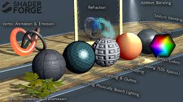

class: center, middle 独りUE4Shader研究（理論） <img src="ue4_log.jpg" width="320px" align="center"> --- # 唐突だが、Shader書きたい！  ということで、僕（オギ）は、今後UE4yochiで、UE4のshaderの研究をします。 --- ## トピック（第一回） 1. 参考サイトなどetc 1. Shaderって? 1. UE4でShaderを動かすには？ --- # 1. UE4の参考サイト とりあえず、参考サイト列挙してみる. * [UE4ドキュメント](https://docs.unrealengine.com/latest/JPN/index.html) * [アンリアル エンジン 4.11 がリリースされました!](https://www.unrealengine.com/ja/blog/unreal-engine-4-11-released) * [シェーディング モデル](https://docs.unrealengine.com/latest/JPN/Engine/Rendering/Materials/MaterialProperties/LightingModels/index.html) * [シェーディング](https://docs.unrealengine.com/latest/JPN/Engine/Rendering/Materials/Functions/Reference/Shading/index.html) * [UE4 でレンダリングへの長い道のりーシェーディングについてー](http://qiita.com/maprog/items/019bc51e4f84e24aaa33) * [シェーディング](http://www.not-enough.org/abe/manual/comm/shading.html) * [WebGL: 物理ベースレンダリング](http://t-pot.com/program/154_PBR/) * [UE4のCustomノード(カスタムHLSLシェーダ)を使ってみた](http://pafuhana1213.hatenablog.com/entry/2015/02/15/152312) * [UE4_C++コードを使用したプロジェクトを作る手順](http://historia.co.jp/archives/282) * [HLSL Shaders_EpicGameWiki](https://wiki.unrealengine.com/HLSL_Shaders) * [Wall | VK](https://vk.com/wall-92756173?q=%23hlsl) --- ## とりあえず 第一回は、[UE4](https://docs.unrealengine.com/latest/JPN/Engine/Rendering/Materials/index.html)の公式リファレンスや[UE4 でレンダリングへの長い道のりーシェーディングについてー](http://qiita.com/maprog/items/019bc51e4f84e24aaa33)などの記事をまとめていく --- ## Shaderの基礎知識 ## みなさんご存知かと思いますが… #### Shaderとは? * 3次元コンピュータグラフィックスにおいて、シェーディング（陰影処理）を行うコンピュータプログラムのこと * 「shade」とは「次第に変化させる」「陰影・グラデーションを付ける」という意味 #### Shadingとは? * 3次元コンピュータグラフィックスやイラストレーションなどで明暗のコントラストで立体感を与える技法 --- ## Shaderの基礎知識 ### Shadingの種類(一般的) |種類|概要| |:-|:-| |照明モデル|ライト・視点・表面の材質などから明るさを求める方法| |スムースシェーディング|ポリゴンなどの頂点から補間によって明るさを求める方法| ### Shadingの種類(UE4) |種類|概要| |:----------------------------------------------|:--------------------------------------| |物理ベースレンダリング|物理現象として起こっている光学現象（光の反射・散乱・屈折・吸収など）を計測してより厳密に数式でモデル化したレンダリング手法| |サブサーフェススキャッタリング( SSS )|光が半透明な物体の表面を透過し、物体の内部で散乱した光が表面から出て行く仕組みを利用したレンダリング手法| |Clear Coat|サーフェスに適用するマテリアルのブレンドを行う際に使用する| --- ## 最速レンダリングの理論入門 |ライティングの種類|概要| |:------------------------|:--------------------------------------| |環境光反射(Ambient Reflection) |遠巻きの光| |拡散反射(Diffuse Reflection) |入射角と反射角を計算| |鏡面反射(Specular Reflection) |金属反射を再現| <br> |シェーディングの補完技術|概要| |:------------------------|:--------------------------------------| |フラットシェーディング(flat shading)|1ポリゴン1法線に基づいてシェーディング| |グーローシェーディング(Gourand shading)|頂点ごとにシェーディング| |フォンシェーディング(Phong shading)|フラグメントごとにシェーディング| ### で、物理ベースレンダリングは、こんなもん考えなくてよい！ --- ## 物理ベースレンダリングの数学を最速で! ### レンダリングの歴史 1986年デビッド・イメル氏らとジェームズ・カジヤ氏により、物理現象をレンダリングできるようにした理論（レンダリング方程式）を考案 <br> おそらく、レンダリング方程式は、マクスウェル方程式の簡略化ではないかと思ったり… <br> 詳しくは、論文読んでね。 <br> 基本的にこの方程式がもとになっている. # 論文 → [THE RENDERING EQUATION](http://www.dca.fee.unicamp.br/~leopini/DISCIPLINAS/IA725/ia725-12010/kajiya-SIG86-p143.pdf) # Wiki → [Rendering equation](https://en.wikipedia.org/wiki/Rendering_equation) --- ### 2 UE4でShaderを動かすには？ * MaterialEditor → ノードベースでマテリアルを構築 * C++ → MaterialEditorの[Custom 表現式](https://docs.unrealengine.com/latest/JPN/Engine/Rendering/Materials/ExpressionReference/Custom/index.html)という方法でHLSLを入力 でいじれるみたい? <br> <br> <br> ### どうも、MaterialEditorで構築した、Materialが最終的にShaderCodeに変換され、それがクロスコンパイルされ、マルチプラットフォームになるみたい --- ## 3 MaterialEditorの使い方 ### MaterialEditorの立ち上げ方 ド基本 「Content Browserビュー」→ 「Create Base Asset」→「Material」 ### 4 Materialについて * MaterialEditor:マテリアルを作成するビジュアルプログラミング(内部はHLSL) * [リファレンス](https://docs.unrealengine.com/latest/JPN/Engine/Rendering/Materials/Editor/index.html) --- ### MaterialEditorからHLSLのコードを見るには? 「MaterialEditor」→「window」→「HLSLCode」 で見れる. ---